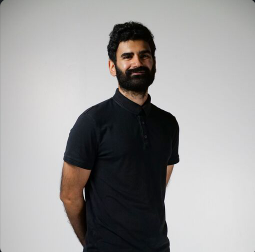

Luke Aspeling

Summary
I've worked for 7 years in the media industry covering roles such as animator,
illuatrator, writer, producer and I didn't love it anymore. I developed a need to create
beneath the surface, the adobe suite was great but I wanted to see the code, how this application
came into being. This birthed a passion for web development, I can create in below and aove the surface I can build applications that enrich
lives. Corny, but yeah I do get excited because I finally understand what am I'm looking when inspecting a webpage on Google.
Education
AFDA School of Motion Picture Medium| 2015-2018
Obtained Bachelor of Arts in Motion Picture Medium
Work History
Edge Education|2022-Present| Senior Video Editor
Edge's work wasn't necessarily the most creative but it did get me to focus on how a product comes life, I got to see the various elements that went into making one video. From working with
with the content developers, to prepping scripts and storyboarding shoots.
Key Tasks
- Overseeing Productions
- Editing content
- Creating and editing assets
- storyboarding and script prep
- Animating 2d and 3d elements for in-house or bespoke projects
- Directing and Producing
Robben Island Museum|2019-2021| Media Specialist
I worked on the backend, solely focusing on producing content for the Museum. I worked with archived footage and led a team of 3.
We created bespoke series for the Island focusing on prisoners overcoming adversity. It was powerful because visitors got to hear the stories told by the Ex-Political Prisoners.
Key Tasks
- Digitizing footage
- Developing coherent storylines
- Creating motion and graphic design elements
- Hosting weekly meetings and organizing tasks
- Animating 2d and 2d elements
Skills
- Adobe After Effects
- Adobe Premiere Pro
- Adobe Illustrator
- Blender
- Motion design
- Illustration
- Storyboarding
Hobbies
- Learning
- Binging
- Listening
- Vegging
Contact me